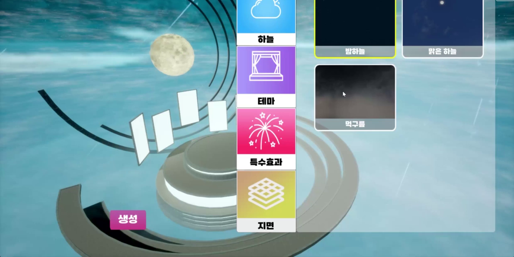
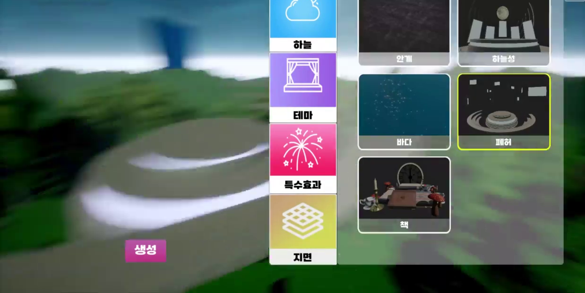
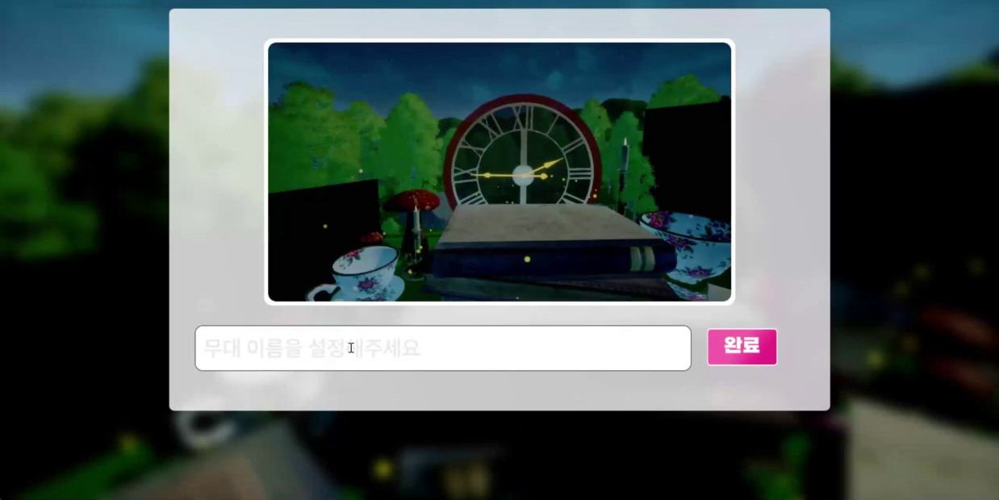
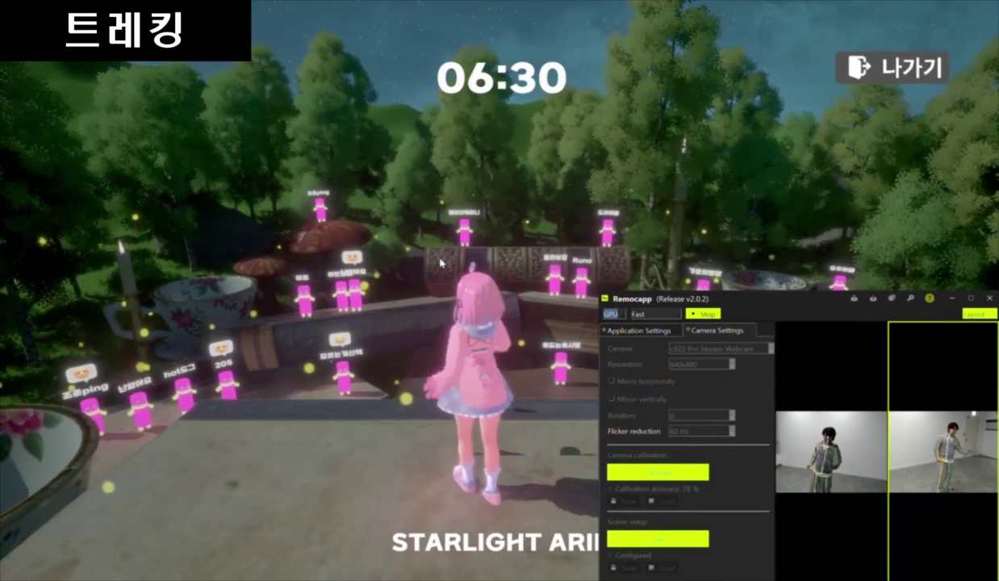

Stage On
버튜버가 실시간 모션으로 무대에 서고, 관객이 그 공연에 입장하는 가상 콘서트 플랫폼입니다.
- 장르
- 가상 콘서트 플랫폼
- 엔진 · 언어
- Unreal Engine 5 · Blueprint 중심, 일부 C++
- 규모 · 기간
- 7인 팀 · 2024.09–11
- 담당
- 무대 구성 · 썸네일 · OSC 수신 흐름
어떤 서비스인가
공연자는 웹캠 모션캡처로 아바타를 움직여 무대에 서고, 관객은 티켓을 사서 같은 공간에 입장해 관람합니다. 공연자가 직접 무대를 만들어 저장하고, 그 무대에서 공연을 열 수 있습니다.
제가 맡은 것은 무대를 만들고 저장하는 흐름 전체와 외부 모션캡처 데이터를 언리얼로 들여오는 수신 구조입니다.
과학기술정보통신부 장관상(대상) 수상작입니다. 메타버스 아카데미 3기 성과공유회, 2024.12.

무대 구성 시스템
하늘 · 테마 · 특수효과 · 지면 네 가지를 조합해 무대를 만들고 저장합니다.
구현
- 카테고리 넷(하늘 / 테마 / 특수효과 / 지면)을 좌측 탭으로 두고, 고른 카테고리의 프리셋 목록을 우측에 띄우는 설정 UI를 제작했습니다.
- 프리셋을 고르면 해당
StreamLevel을 동적으로 로드하고, 이전 것은 언로드합니다. - 레벨에 딸린 오브젝트는
Actor Tag로 표시해 두고, 교체 시 태그 기준으로 일괄 정리합니다.
화면


어려움
- 문제
- 아트 리소스가 개발 후반까지 계속 들어왔습니다. 무대 프리셋이 하나 추가될 때마다 코드를 고쳐야 하면 일정이 감당되지 않았습니다.
- 원인
- 무대 오브젝트를 코드에서 직접 참조하고 있었기 때문입니다. 무엇이 올라와 있는지를 코드가 알아야만 치울 수 있는 구조였습니다.
- 해결
- 무대를
StreamLevel단위로 나누고, 정리 대상을 개별 참조가 아니라Actor Tag로 식별하게 바꿨습니다. 새 프리셋은 레벨과 태그만 갖추면 되므로 코드 수정 없이 반영됩니다.
성과
무대 썸네일 생성과 업로드
저장하는 순간의 카메라 시점을 그대로 찍어 무대의 대표 이미지로 씁니다.
구현
SceneCaptureComponent2D와RenderTarget으로 현재 카메라 시점을 이미지로 캡처합니다.- 캡처한 이미지를
HTTP Multipart로 업로드하고, 응답으로 받은 URL을 무대 저장 데이터에 연결합니다. - 저장된 무대는 목록에서 이 썸네일로 구분됩니다.
화면

SceneCapture로 방금 찍은 것입니다. 이름을 넣고 완료하면 업로드된 URL과 함께 저장됩니다.어려움
- 미작성
- 이 기능의 트러블슈팅은 아직 정리하지 않았습니다. 업로드 응답을 기다리는 동안의 처리(저장 버튼 중복 입력, 실패 시 재시도, 캡처 해상도나 용량 문제) 같은 게 있었다면 문제 / 원인 / 해결 세 칸에 맞춰 알려주시면 채웁니다.
성과
실시간 모션 수신 구조
외부 모션캡처 앱이 쏘는 데이터를 언리얼이 직접 받도록 경로를 바꿨습니다.
구현
- 공연자의 웹캠을 Remocapp이 읽어 모션 데이터를
OSC로 송신하고, 언리얼이UDP소켓으로 직접 수신합니다. - 받은 데이터를 주소 패턴별로 나눠 모션과 페이셜을 다른 경로로 처리합니다.
- 수신한 값을
VRM4U아바타에 반영해 무대 위 캐릭터가 움직입니다. - 기여 범위 — 구조 선택과 연결은 제가 했고,
소켓 생성·수신 스레드·바이트 파싱은
VRM4U와UOSCServer플러그인이 처리했습니다.
화면

어려움
- 문제
- 모션 데이터를 본(bone) 단위로
RPC전달하던 초기 구조가 실시간을 따라가지 못했습니다. 동작이 뚝뚝 끊겨 보였습니다. - 원인
- 본 개수만큼 호출이 늘어납니다. 게다가
RPC로는 외부 프로그램의 데이터를 직접 받을 수 없어, 모션캡처 앱의 값을 일단 서버로 들여오는 중계 계층이 한 겹 더 필요했습니다. - 해결
- 엔진 네트워킹 경로를 거치지 않고
UDP소켓으로 직행하는OSC수신으로 바꿨습니다. 외부 앱에서 언리얼까지 중계 없이 한 번에 들어옵니다.
이 판단이 실제로 옳았는지는 2년 뒤에 직접 확인했습니다. 플러그인이 감추고 있던 소켓·수신 스레드·바이트 파싱을 직접 구현하고 같은 데이터를 RPC로도 보내 비교했습니다 → MiniOscReceiver · 측정 전문
성과
범위와 한계
구현은 Blueprint 중심이며 일부를 C++로 작성했습니다.
OSC 수신 자체는 플러그인(VRM4U, UOSCServer)에 의존했고,
당시 이 구조의 성능을 수치로 측정한 적은 없습니다 —
위에 적은 측정값은 전부 2026년에 만든 별도 데모의 값이며 이 프로젝트의 수치가 아닙니다.